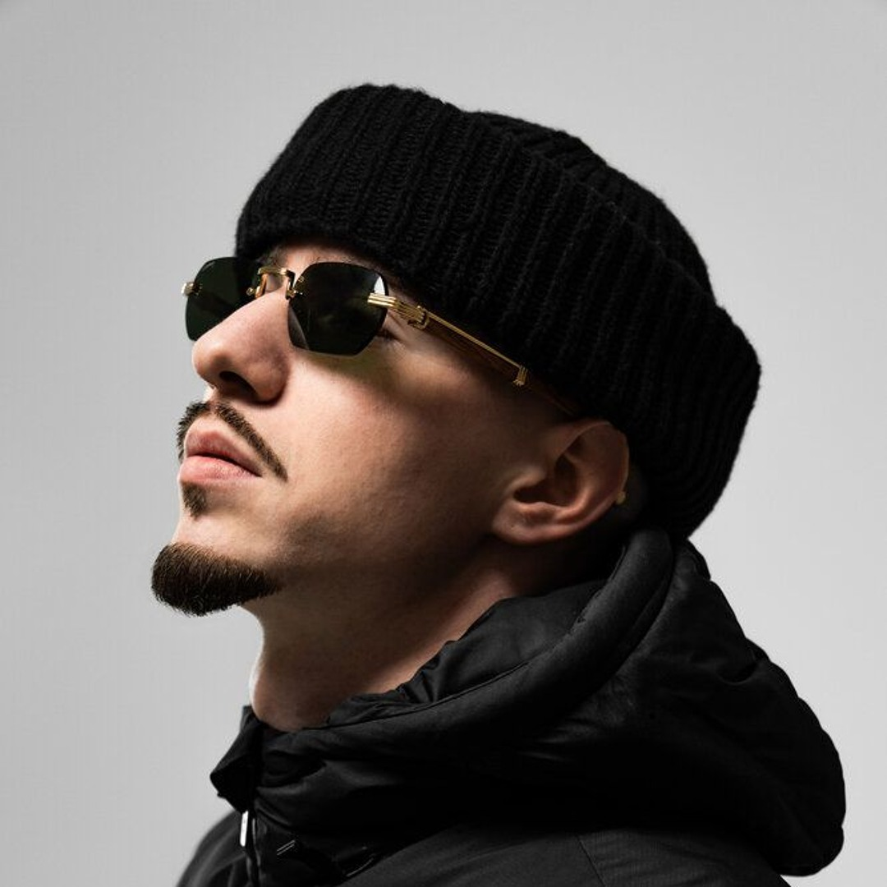

My Top 10 Favourite Artists
Friendly Thug 52

welcome to my website, this website goes over my favourite artists in a cool and unique way, I made this website to practice and dust off my HTML and CSS skills as well as add on any JS that I learn through my module in college and my own. Of course this website is still about music so feel free to go and listen to some of my favourite music, it's not extremely popular so chances are you probably don't know a person or two.
